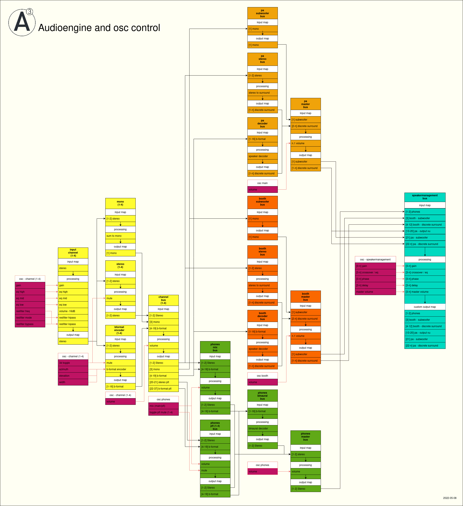

A³ User
A³ Developer
A³ Ressources
A³ Legal
A³ Core Development¶
Archlinux realtime kernel must be well configured to assure low latency and stable audio processing
jack2 audio engine and alsa
Qjackctl may be used to patch virtual audio cables from your hardware to Reaper and back out
Python script OSC-Router¶
Routes OSC between audioengine and controller
server.py
Supercollider script VU-Meter¶
12-Channel Jack client
sends vu-meter (peak and rms) via OSC
VU-Meter.scd
FOH Setup Page¶
Reach it via vnc player vncviewer QualityLevel 2 192.168.43.50
Screen 8: Qjackctl (Patching)
Screen 9: Reaper (Sequencer)
Screen 10: Reaper (Mixer)
IEM Pluginsuite¶
IEM-Pluginsuite VST plugins for 3D audio processing
StereoEncoder
AllraDecoder
BinauralDecoder
FDN Reverb
AllraDecoder must be configured to fit your speaker setup
Plasticity filter FX¶
Plasticity Filter VST plugin for hipass lopass resonance filter
Jmess (jack audio wiring)¶
Jmess is used to store and restore jack connections
aj-snapshot can be used to store and restore alsa connections
Audiobackend Signalflow¶
a3-audio.RPP
